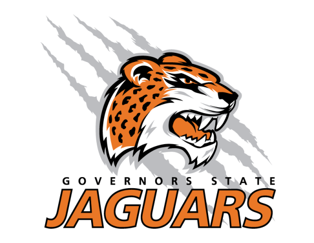
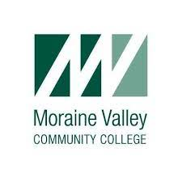

Rosemarie Noonan Resume Site
Education

Governors State University (Spring 2021 - Spring 2022)
I am currently a student at Governors State University pursuing a Bachelor of Science in Information Technology. Classes I have taken so far revolve around the subjects of Python, Network Infrastructures,
Cloud Computing, and Information Security. I plan to take more classes in programming languages and security in my last two semesters. My current running GPA is 4.0, and my anticipated graduation date is in May of 2022.

Moraine Valley Community College (Summer 2018 - Fall 2020)
As soon as I graduated from high school I immediately started college at MVCC. In the beginning, my focus was on everything Cisco. Topologies, infrastructure, troubleshooting, and software. Due to my desire for a more broadened
skill set and background, I switched focus to Information Technology. Since then, the classes I took at Moraine Valley touched on topics including, computer hardware, software, network Infrastructures of both enterprise and personal networks,
ethical hacking, digital forensics, Linux, information security, networking protocols, Windows Servers, Virtualization, and Project Management. I transferred from Moraine Valley Community College after the completion of the Fall 2020 semester
with a 3.78 GPA and an Associates’s Degree in General Studies.
Carl Sandburg High School (August 2015-May 2018)
High school was the catalyst for my passion for technology, as a brief overview of the classes I took in high school, they mainly revolved around the subjects of applied technology, including Computer Maintenance and Repair, Cisco Computer Networking, and Computer
Science Fundamentals. The clubs I was the most involved with were the competitive robotics team and chess club.